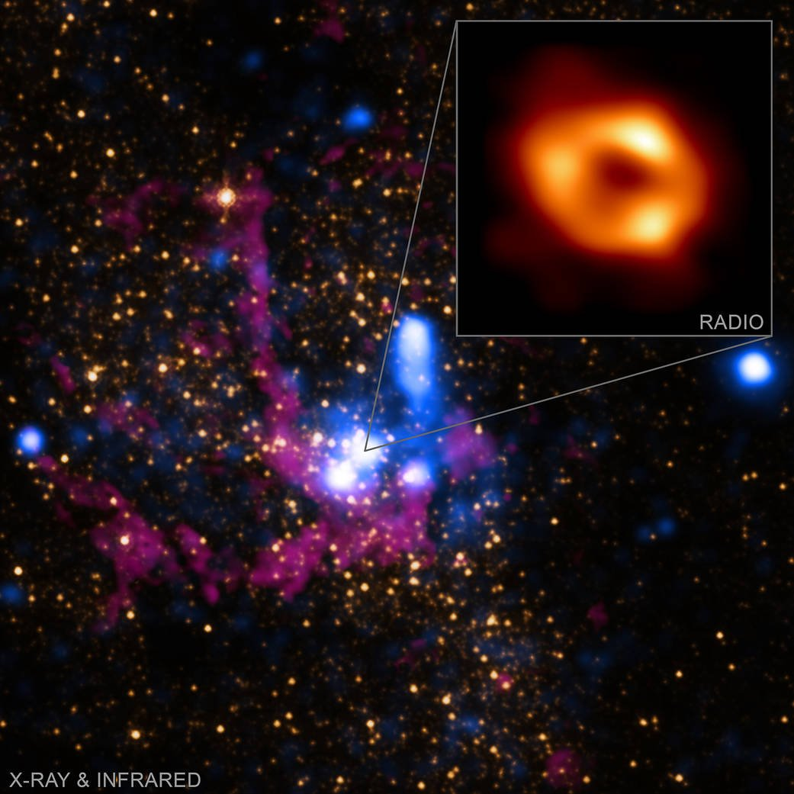
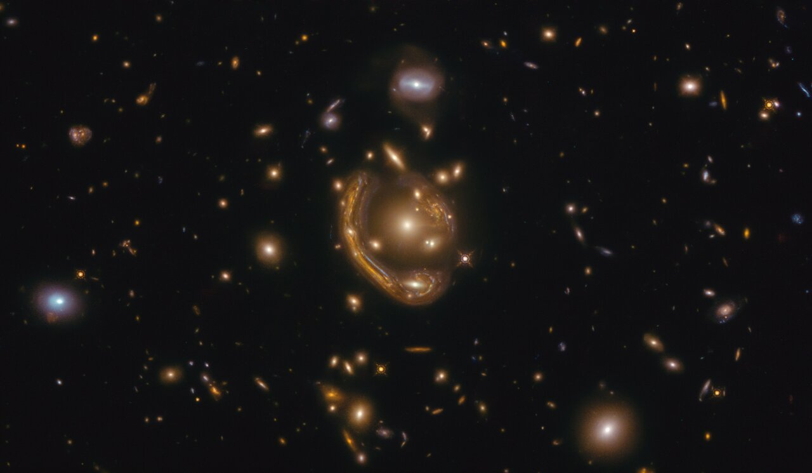
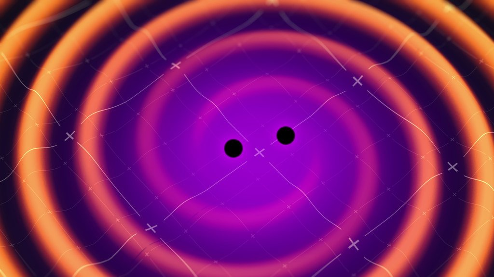
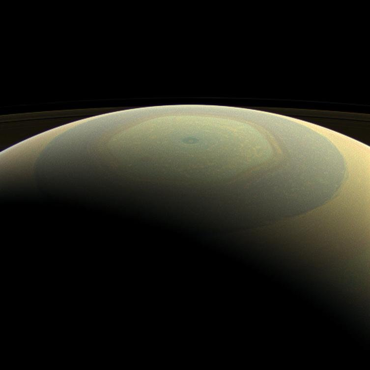
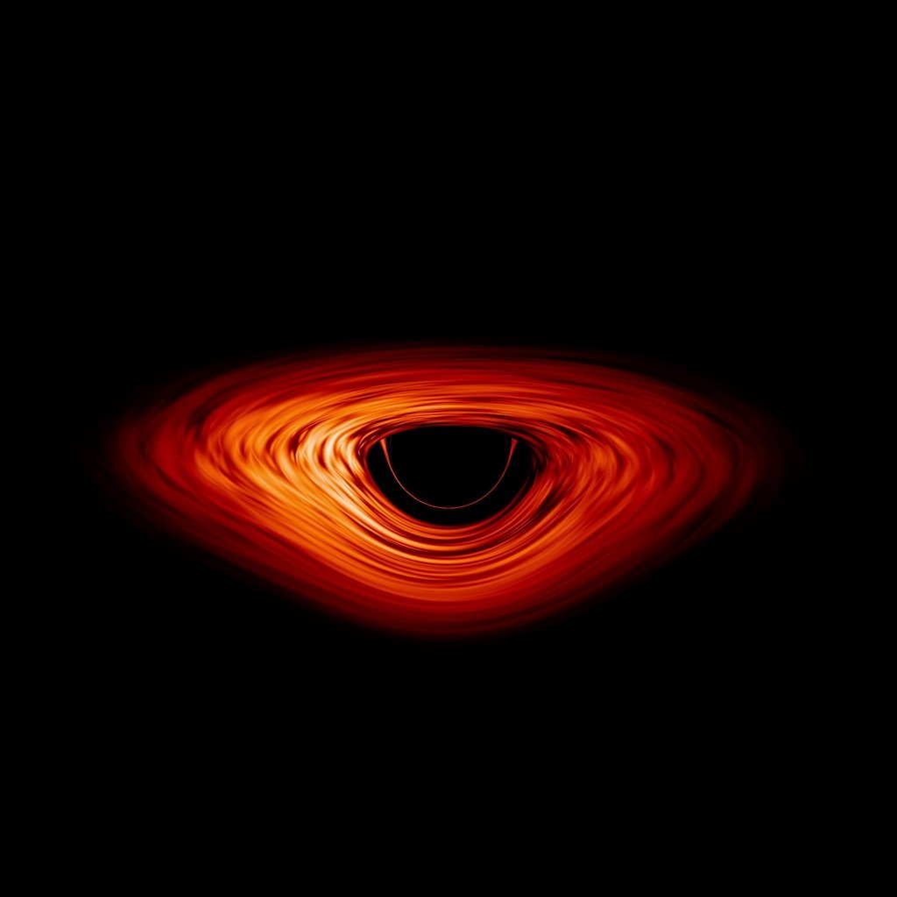
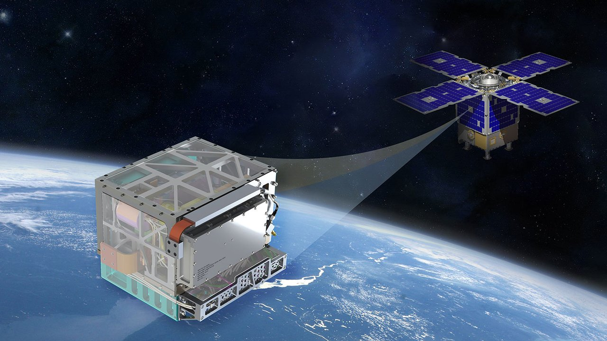

Galería
Todo el material gráfico del sitio reunido en un solo lugar, organizado por los cuatro ejes: los mundos que visita la expedición Endurance, sus personajes, la ciencia real que sostiene la historia y el viaje por el espacio y el tiempo. Cada imagen abre en el visor a tamaño completo; su fuente está en la página de créditos.
64 imágenes
Mundos
Ver la página completa-

Cooper frente al «fantasma» de la biblioteca, sin saber todavía qué es. -

La Tierra moribunda: una tormenta de polvo cubre el pueblo. -

La granja de los Cooper, entre el maíz que todavía crece. -

La Tierra rendida: el polvo se traga la granja. -

De vuelta a casa por el camino de tierra, entre el maíz. -

La persecución del dron sobre el último maíz que crece. -

Otro atardecer polvoriento sobre los campos de maíz. -

Maniobrando cerca de Gargantúa, a contraluz de su propio resplandor. -

El planeta de Miller, donde las montañas son olas. -

La Ranger sobre el océano de Miller, minutos antes de la ola. -

Sobre el hielo de Mann, donde nada es lo que promete la señal. -

Travesía por los campos helados del planeta de Mann. -

Sobre las nubes congeladas de Mann: hielo que se puede pisar. -

Desde el otro lado del estante, Cooper mueve lo que ella ya había visto. -

Cooper alcanza los libros desde el otro lado del tiempo. -

El rostro de Cooper, atrapado entre los planos del Tesseract.
Personajes
Ver la página completa-

Detrás de cámaras: Nolan dirige la escena de la granja. -

La despedida: Cooper deja a Murph para ir a las estrellas. -

Padre e hija, a contraluz, sin ponerse de acuerdo. -

Cooper a los mandos, en el momento crítico. -

Cooper durante el acople, al borde de sus fuerzas. -

El peso de la gravedad sobre el rostro de Cooper. -

Detrás de cámaras: Cooper y Murph, entre toma y toma. -

Murph niña, cuando cree que hay un «fantasma» en su habitación. -

Murph adulta, contra el reloj, con la respuesta en la mano. -

Murph anciana, al final de su vida. -

Dra. Amelia Brand, astrónoma de la tripulación del Endurance. -

Amelia Brand, lista para bajar a un mundo desconocido. -

Profesor Brand, mentor y responsable del «Plan A». -

Dr. Mann, «el mejor de nosotros», que falsificó sus datos. -

TARS, a bordo del Endurance, con su pantalla encendida. -

Referencia real: un astronauta de la NASA en órbita.
La Ciencia
Ver la página completa-
M87 en luz polarizada: el campo magnético real al borde de un agujero negro (EHT). -

La primera fotografía real de un agujero negro (M87, Event Horizon Telescope). -

Gargantúa y su disco de acreción, con la luz curvada por la lente gravitacional. -

El Tesseract, donde el tiempo se recorre como si fuera un espacio. -

Cooper detrás de la biblioteca, empujando el tiempo. -

Dentro del Tesseract, donde el tiempo es una dimensión más. -

El tiempo convertido en corredores que se pueden recorrer. -

La ecuación de la gravedad, línea por línea, en el pizarrón. -

El último centro de control de la NASA, escondido bajo tierra. -

El agujero de gusano, cerca de Saturno, que abre el atajo a otra galaxia. -

Sagitario A*, el agujero negro real en el centro de nuestra propia galaxia (NASA/EHT). -

Un anillo de Einstein real: la luz de una galaxia lejana, curvada por la gravedad de otra (ESA/Hubble). -

Dos agujeros negros fusionándose: la fuente real de las primeras ondas gravitacionales detectadas (NASA). -

Saturno real, fotografiado por la sonda Cassini cerca de donde la película sitúa el agujero de gusano. -

Simulación científica de un disco de acreción, calculada con las mismas ecuaciones que inspiraron a Gargantúa (NASA). -

El reloj atómico de espacio profundo de la NASA, la tecnología real que mide la dilatación del tiempo.
{kind=link}
{kind=link}
{kind=link}
{kind=link}
{kind=link}
{kind=link}
{kind=link}
El Viaje
Ver la página completa-

Los Pilares de la Creación (NASA, ESA/Hubble). -

La Endurance, la nave que cruza el agujero de gusano. -

Reentrada: el borde de la nave al rojo vivo contra la atmósfera. -

Salida de la órbita terrestre rumbo a Saturno. -

La Tierra queda atrás: la nave, un punto camino al agujero de gusano. -

Cooper a la deriva, tragado por la luz. -

Estación Cooper: la humanidad viviendo dentro de un cilindro que gira. -

Amelia en el planeta de Edmunds, empezando el nuevo hogar. -

El mundo de Edmunds, el plan B que sí era real. -

Un despegue más, ya sin la Tierra a la espalda. -

La Endurance, un punto diminuto contra las nubes de Gargantúa. -

El arco de luz de Gargantúa, curvado por su propia gravedad. -

El descenso hacia el horizonte de sucesos de Gargantúa. -

Cooper, al límite, durante la caída hacia Gargantúa. -

El acople con el módulo que gira fuera de control. -

La ola gigante en el planeta de Miller, a punto de arrasar todo.